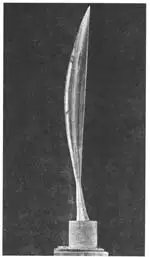
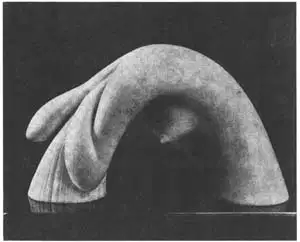
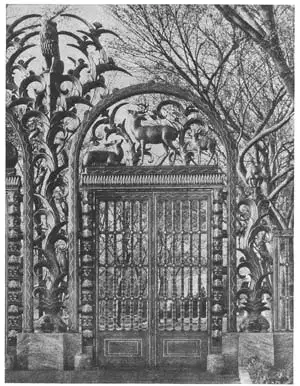

91
MODERN SCULPTURE
现代雕刻

MODERN sculpture can be non-realistic just as painting can, Non-realistic sculpture gives the idea, the thought, the impression of something. The sculptor doesn’t try to make an exact copy of something he sees.
If you will look at the picture called “Bird in Space” you will see an example of non-realistic sculpture. You can see that it doesn’t look like a bird. But it does give the idea of flight. The flight of a bird depends upon wings and this sculpture seems to be all wing. At least most people think it looks wing-like. It is a smooth streamlined wing shape. Constantin Brancusi, its sculptor, carved into it no feathers, no body, no head or tail of a bird. Some people think that a piece of sculpture called a bird should look like a bird. In this sculpture, however, the flight of a bird, not the bird itself, is the important idea.
Non-realistic sculpture is a twentieth century kind of sculpture. Brancusi was one of the first to develop this style. He was born in Romania and studied art there as a young man. Then he went to Paris and worked in the studio of the great French sculptor Auguste Rodin. At first his sculpture was realistic like Rodin’s. But he became interested in non-realistic sculpture and soon stopped making realistic statues.
Brancusi not only made new forms of sculpture but he tried using many different materials. He made sculptures in wood, bronze, marble, stone, glass, and steel. “Bird in Space” is his best-known work.
The sculpture called “Girl Washing Her Hair” is by Hugo Robus, an American born in Cleveland. It is much more realistic than Brancusi’s “Bird in Space.” It isn’t, however, very realistic. It isn’t a portrait. It has no eyes, nose, or mouth to show which girl this is. It’s any girl. What she is doing is more important than who she is. The sculptor didn’t need to show us a whole person to let us see that hairwashing is being done. If anything else were added (like a nose or mouth or feet) it would not make the idea of hairwashing any clearer.

No.91-1 BIRD IN SPACE（《空中的鸟》）
BRANCUSI（布朗库西制）
Collection the Museum of Modern Art,
New York

No.91-2 GIRL WASHING HER HAIR （《洗头发的少女》） ROBUS （罗布斯 制）
Collection the Museum of Modern Art, New York
It’s fun to find a piece of sculpture that is not too dignified and serious. Most sculpture has been, in the past, very dignified and very serious. There are the busts of powerful men like the Roman emperors, statues of Greek gods and of heroes on horseback and of Christian saints. There are imaginary figures called Victory, or Liberty, or Justice. These are all very solemn and impressive statues, as if the sculptors didn’t want to waste their valuable time and marble on unimportant subjects that are familiar and amusing.
People, however, like familiar and amusing things. Statues of the kind of people we see every day, doing the things we are all used to, are usually well liked. More and more modern sculptors are carving these familiar and everyday kind of people like the “Girl Washing Her Hair.” Nobody ever saw Victory or Liberty or Justice washing their hair, even as statues.
Look back at page 196 at the “Boy with Thorn.” Even two thousand years ago some sculptors had found it fun to make such familiar, everyday, amusing statues. “Boy with Thorn” is much more realistic than “Girl Washing Her Hair.”

No.91-3 A SECTION OF THE RAINEY MEMORIAL GATEWAY BY PAUL MANSHIP.
NEW YORK ZOOLOGICAL PARK（纽约动物园雷尼纪念馆门道一部分）
（保罗·曼希普 制）
Courtesy of Paul Manship
You don’t have to go to a museum to see the different kinds of sculpture. Every city has sculptures in parks and on monuments and on the outside of buildings. As they are out of doors they are easy to photograph and make good subjects for your camera.
When you visit the city of Washington you see sculpture almost everywhere. When you visit New York City you probably will go to Rockefeller Center and to the zoo. At Rockefeller Center you can see a large bronze piece of sculpture called “Prometheus.” It is by a famous American sculptor, Paul Manship. And at the New York Zoological Park you can see the beautiful bronze entrance gates. They are also by Paul Manship. Entrance gates to a zoo, you might think, should be decorated with carvings of animals. Paul Manship thought so too. The bronze work around the gates is full of wild animals: bears, deer, baboons, lions. Paul Manship’s work is realistic and has a fine decorative quality.
Modern sculpture, you see, is of several kinds. Some is non-realistic like Brancusi’s“Bird in Space.” Some is more realistic, giving the general form of an object but not trying to be a close copy of the living thing, like “Girl Washing Her Hair” by Robus. And some modern sculpture is realistic, but decorative, like Paul Manship’s“Prometheus” and his animals of the zoological gates. All three kinds of modern sculpture are worth seeing.
【中文阅读】
现代雕刻和绘画一样也有非现实主义风格。非现实主义的雕刻传达了对事物的看法、观点和印象。雕刻家对他们所看到的事物一般不会原原本本地雕刻出来。
如果你有幸看到一尊名为《空中的鸟》的雕刻作品，那你就看到非现实主义的雕刻的例子了。你会发现它看起来根本不像一只鸟。但是它确实传达了一种飞翔的理念。鸟的飞翔主要是靠翅膀，而这尊雕刻似乎全部都是翅膀。线条整体光滑而流畅。君士坦丁堡的布朗库西，这幅作品的雕刻家，将它雕成一只没有羽毛、没有身体、没有脑袋，甚至没有尾巴的鸟。有些人认为称作鸟的雕刻应该看上去像只鸟才对。但是这件作品，表达的是鸟的飞翔，而不是鸟本身，而飞翔才是它所要表达的重要主题。
非现实主义雕刻是二十世纪的一种雕刻风格。布朗库西是开发这种风格的鼻祖之一。他出生在罗马尼亚，青年时期在那儿学习艺术。他后来去了巴黎，在法国伟大雕刻家奥古斯特·罗丹的工作室工作。但他却对非现实主义的雕刻发生兴趣，很快就不再雕刻现实主义的作品了。
布朗库西不但创作了新的雕刻形式，还尝试使用不同的雕刻材料，如木头、青铜、大理石、岩石、玻璃和钢铁。“空中的鸟”是他最著名的作品。
这尊叫《洗头发的少女》的雕刻作者是雨果·罗布斯，一个出生在克里弗兰的美国人。它比布朗库西的《空中的鸟》要写实得多，但也不是太现实。它不是肖像画。它没用眼睛、鼻子，甚至也没用嘴巴，来表明这位少女是谁。她可以是任何一位少女。她正在做的事比她是谁要重要得多。雕刻家不需要向我们展示整个人体来让我们知道洗头发这件事。如果非要加上一点什么的话（如鼻子、嘴巴或脚），这些添加的 东西并不会使洗头发这个主题更加清晰。
发现某件不太体面或轻佻的雕刻是非常有意思的事。过去的大部分雕刻都是非常严肃体面的。譬如那些有权柄之人的半身像，如罗马君王；还有希腊神像、马背上的英雄以及基督教圣徒的雕像等；再就是想象中的人物，如胜利女神、自由女神或正义女神。这些都是非常庄严、让人印象深刻的雕刻。雕刻家们好像不想把他们的宝贵时间和大理石浪费在不重要的、常见的或搞笑的对象上吧。
但是人们都喜欢熟悉和搞笑的事物。那些我们在日常生活中看到的形形色色的人物雕像，以及他们平时做的普普通通的事情，都是我们所喜欢的。越来越多的现代雕刻家正在雕刻像《洗头发的少女》这些人们熟悉的日常事物。没有人看过胜利女神、自由女神或正义女神正在洗头发这件事，即便是雕像也是如此。
往回翻到第39章图39-4，看看《拔刺的男孩》雕像。即便是在两千年前，就有雕刻家发现制作日常生活中熟悉的、搞笑的雕像也是非常有趣的。只是《拔刺的男孩》比《洗头发的少女》的手法更加写实。
你没有必要非到博物馆去看各式各样的雕刻作品。当你去纽约访问时，你可能会去洛克菲勒中心或动物园。在洛克菲勒中心你会看到一座名叫《普罗米修斯》的巨型铜雕。它的制作者是美国著名雕刻家保罗·曼希普。在纽约动物园里，你可以看到美观的青铜大门。那也是出自保罗·曼希普之手。你或许会认为，动物园的大门上肯定要用动物雕像来做装饰的。保罗·曼希普也是这样想的。大门上雕的青铜作品中有各种动物：熊、鹿、狒狒和狮子。保罗·曼希普的作品是写实的，装饰效果非常好。
你看到了吧，现代雕刻也有好几种类型。有些是非现实主义的雕刻作品，像布朗库西的《空中的鸟》；有些比较写实，刻出了对象的形态，虽然并没试图刻出活物的全貌，像罗伯斯的《洗头发的少女》。还有一些现代雕刻作品就是写实的，但却具有装饰性，如保罗·曼希普的《普罗米修斯》以及他在动物园大门上刻的动物雕像。这三种现代雕刻作品都值得一看。